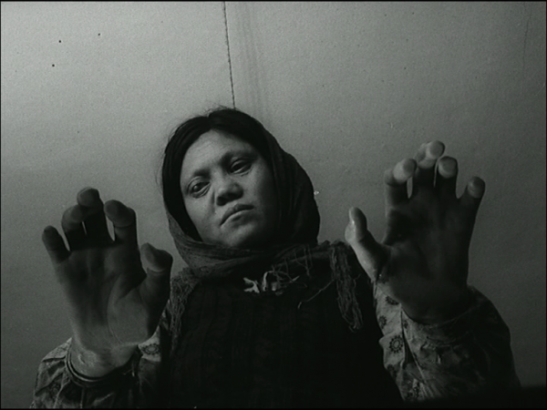
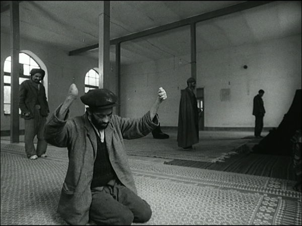
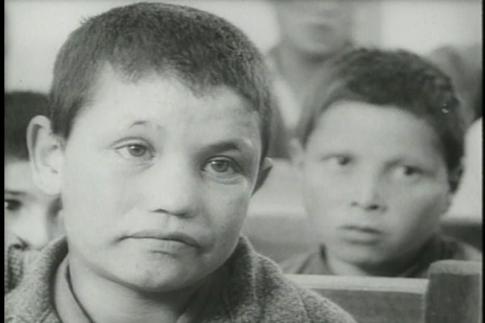

-
Waiting for Light
by Max Nelson January 7, 2013
The House Is Black (Forough Farrokhzad, 1963)
Extreme affliction, which means physical pain, distress of soul, and social degradation, all at the same time, is a nail whose point is applied to the very center of the soul… He whose soul remains ever turned towards God though the nail pierces it, finds himself nailed to the very center of the universe.
- Simone WeilThe House Is Black opens with a zoom and ends with a retreat. At first we can’t see a thing—we need to be prepared. “On this screen will appear an image of ugliness,” a male narrator tells us, “a vision of pain no caring human being should ignore.” After a moment of silence and darkness, a woman’s face appears, or something like a face. We flinch; the camera doesn’t. It zooms in, holds, and holds some more, urging us to look. Twenty-two minutes later, the camera recedes, this time away from a large crowd. A gate clanks shut in its wake bearing two hastily scrawled words, less a name than a warning: “Leper Colony.”
Forough Farrokhzad made The House Is Black in 1963, during a twelve-day stay in the Baba Baghi Leprosarium. It is, or was, a small outpost on the outskirts of Tabriz, in the East Azerbaijan province of Iraq’s mountainous far north. As shown in The House Is Black, Baba Baghi is a place of dust and brick; the walls are whitewashed, the trees dead. Scattered leaves float in pools of standing water. In the streets people dance, laugh, play games, scuffle. Kids run around and hurry to school. We almost forget their flaking skin, their missing hands and feet, their drooping lips. We never really forget, though: their suffering is too close, too visible, too present. Here, affliction touches everything.
***
Three voices make themselves heard in The House Is Black. The first is a man’s, careful, steady, precise. He tells us what leprosy is, that it’s chronic and contagious; that it eats away at the body, blinds, deafens, invades. What kind of world this is in which leprosy exists, what these men and women did to deserve their affliction, doesn’t interest him, at least not directly. Two thoughts guide him: that suffering exists, and that we ought to stop it. “To wipe out this ugliness and to relieve its victims,” he tells us before the film’s first shot, “is the motive of this film, and the hope of its makers.”
“Leprosy goes with poverty,” we’re told. It destroys the body, but it also sections off its sufferers from the social world, crosses them out from the books. They aren’t just afflicted, they’re ignored. Simone Weil, in her essay “Forms of the Implicit Love of God,” imagined the marginalization of the poor and afflicted as a steady process of de-humanization, the sole thing capable of reducing a human being to “the state of an inert and passive thing.” True charity is to return the afflicted their humanity, their claim to justice, even their very existence; it is also, conversely, an act of self-sacrifice, a conscious choice to take up “a share in the inert matter which is [theirs].” Before she even had a chance at dignifying her subjects, Farrokhzad had to risk sharing quite literally in their affliction: leprosy is contagious, and it’s hard to watch The House Is Black without thinking how great a risk it took just to keep the camera rolling inside those walls.
That risk taken, Farrokhzad found herself with another challenge: how to film the afflicted so that they inspire not just pity or respect, but affection. It’s easy to consider these lepers as noble, painted icons of suffering. It’s harder to see them as people with whom one might converse, argue, or crack jokes. Those of us who make it through the first shot of The House Is Black will have acknowledged these lepers’ presence; now we must recognize their humanity.
The House Is Black (Forough Farrokhzad, 1963)
Farrokhzad’s first step was to have the afflicted speak for themselves. Their collective voice, the second of the film’s three, might come from many speakers, but it has a common theme. Toward the end of that first shot, we hear a young, pockmarked boy praying out loud. “I thank you, God…” he reads. “I thank you for creating me.”
Once we give these lepers our attention, we might expect them to protest their lot, to demand attention from a society that’s long ignored them, to say to all who might listen, we don’t deserve this. Some of us might even want them not to stop at their fellow men: why not go to the ultimate source of their affliction, bring their complaint to the feet of God? That, having been given a platform from which to speak, they choose instead to supplicate themselves before God, demanding nothing and accepting everything—and with gratitude, no less—is beyond comprehension. Was Farrokhzad, in giving these lepers the right to demand justice, really giving them the opportunity to renounce that right all over again, this time of their own free will.
If there’s one lesson to be gleaned from The House Is Black, it’s that the afflicted don’t always think or act as we expect them to—that they often refuse to play the role of the dignified victim. Theirs is a community forged by affliction, but not necessarily defined by it. To respect the inhabitants of Baba Baghi as free agents like ourselves, not just lumps of pitiable flesh, means to honor their intentions even when they seem voluntarily to shrug off the very rights Farrokhzad has been trying to win for them. What if they don’t care for rights, claims, or complaints? What if they don’t even care for justice as we might define it—or, still more bafflingly, what if they find their situation just? Charity is quick to point fingers in favor of its charge; it takes a very different sort of empathy to grasp that life, seen through the eyes of the afflicted, might be something to receive not with indignation, but with gratitude.
“I thank you for giving me eyes to see the marvels of this world,” prays one young boy, squinting through drooping eyelids. Farrokhzad gives us a tall order: to see in the dusty alleys and ramshackle streets of Baba Baghi what that boy sees, to trade our way of looking, and feeling, for his. The House Is Black does more than challenge us; it overrides us, beats us down. It can never do so fully, of course, and that failure on the part of the film to make us see anew is really a failure, inevitable but disappointing, on our part—a failure to see these lepers as they see themselves, as defined by something apart from their affliction. It is, ultimately, a failure of empathy. Still, there are occasional breakthroughs: in one late-film scene, we dart with Farrokhzad breathlessly from team to team in a children’s soccer game, hooking, diving, hopping, bouncing around. Maybe at that instant we’re capable of forgetting the kids’ affliction, or at the very least of letting it slip off to the background, replaced by the arc of a soccer ball in mid-air, the rush of bodies through space, the fall of light on hair and skin.
There are limits to identification. We want to demand relief for the meek and afflicted–all the more so if, out of their unconditional love of life, they never demand relief for themselves. The more these lepers consider themselves blessed, the more inclined we are to take count of their blessings and find them lacking. The House Is Black, then, is a film torn between two diverging desires: the desire to identify with the afflicted so completely as to take on their way of seeing, and the desire to defend them from the balcony, to argue their cause to the world. Both find an uneasy balance in the film’s third voice, Farrokhzad’s own. That’s her in an early scene, looking on at a schoolroom of leprous children knee-deep in prayer, asking a question that is really a challenge: “Who is this in Hell praising you, O Lord?” In other words: Who in Hell would praise you? Or perhaps: Why would those who praise you be in Hell?
The voice belongs to Farrokhzad, but who’s speaking? Sometimes first-person, sometimes third, neither internal monologue nor outsider testimony, at once collective and personal, this third voice seems to float from speaker to speaker, subject to subject, soul to soul. It’s the voice of a community, but also of its defenders, including those behind the camera. It tends to appear over footage of nature, perhaps recalling Christ’s prediction that if his disciples fall silent, “the stones themselves will cry out”; though if they cry now, it’s likely more out of sorrow than joy. Late in the film, an aging, one-legged man hobbles toward the camera, framed by rows of trees, backed by the setting sun. Meanwhile, Farrokhzad reads a few verses, derived from one of Isaiah’s especially pained laments:
Alas, for the days are fading,
the evening shadows are stretching.
Our being, like a cage full of birds,
is filled with moans of captivity.
And none among us knows how long he will last.
Like doves we cry for justice…
and there is none.
We wait for light, and darkness reigns.There’s not much anger here, and what little there is, it’s muted by a sorrow so profound and so total that it doesn’t allow for righteous indignation. But it’s a sorrow suffused with hope, and made still more acute for it; in the high-contrast, black-and-white world of The House Is Black, patches of shadow look all the darker next to comparatively blinding streams of light. The two seem often at odds, sometimes ill matched: in this instance, that one-legged man marches toward the camera until his body engulfs the frame in dark. For a few seconds, we hear only the repeated clanks of his walking stick. Then, a child’s voice, reading aloud: “Sometimes at twilight we see a bright star.” For most of The House Is Black, light and dark are present onscreen in equal measure, vying for control, but perhaps the lepers’ condition can best be expressed by light’s absence, or at least its deferral—by light as something not yet attained, but longed for, glimpsed, and expected.
The House Is Black (Forough Farrokhzad, 1963)
Near the end of the film, a child sitting in class is asked to name a few beautiful things—the moon, the sun, flowers, playtime—and another a few ugly things. “Hand,” he replies, giggling, “foot, head.” A third has to come up to the blackboard and use the word “house” in a sentence. He hesitates, turns, and slowly writes out, the house is black.
There are many films in which the beautiful and ugly coexist, and many that propose some way of easing the resulting tension, whether by giving one the last word, or (less frequently) by reconciling the two. The House Is Black doesn’t propose a thing. It’s a film not about striving, ascending, or transcending, but about waiting—sometimes patiently, sometimes fitfully. There is beauty, but not enough to compensate for affliction; hope, but no sign of its fulfillment. No sign even of an object on which hope could settle, any potential source of grace.
Well, maybe one. If in watching The House Is Black we witness and even briefly participate in the giving back of humanity to the afflicted, if it was by filming these lepers that Farrokhzad managed to return them their dignity, if not their health, then perhaps The House Is Black is in some meager and incomplete way its own source of grace. For twenty-two minutes, these men and women have the chance to see their shattered bodies re-written in light—if only on a screen, by the flickering glow of a projector. They haven’t been healed, but they’ve seen their present sufferings reproduced in a new, immaterial substance, one untouched by bodily affliction. It isn’t a solution, but it might at least be a promise.